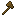

CREATE CODEX
机械动力图鉴
标签
源码
首页
/
标签
/ axes

#axes
minecraft:axes
标签
成员
这个标签的成员由 Forge 在运行时注册，jar 里没有写死。
用到它的 Create 配方
24
铜砖瓦台阶
铜砖瓦楼梯
铜砖瓦
铜瓦台阶
铜瓦楼梯
铜瓦
斑驳的铜砖瓦台阶
斑驳的铜砖瓦楼梯
斑驳的铜砖瓦
斑驳的铜瓦台阶
斑驳的铜瓦楼梯
斑驳的铜瓦
氧化的铜砖瓦台阶
氧化的铜砖瓦楼梯
氧化的铜砖瓦
氧化的铜瓦台阶
氧化的铜瓦楼梯
氧化的铜瓦
锈蚀的铜砖瓦台阶
锈蚀的铜砖瓦楼梯
锈蚀的铜砖瓦
锈蚀的铜瓦台阶
锈蚀的铜瓦楼梯
锈蚀的铜瓦